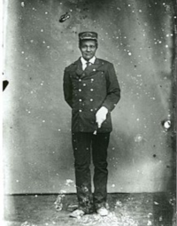
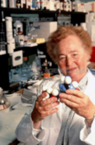

<!--<!DOCTYPE html>
<html lang="pt-br">
<head>
    <meta charset="UTF-8">
    <meta name="viewport" content="width=device-width, initial-scale=1.0">
    <title>NOTÍCIAS</title>
    <link rel="shortcut icon" href="favicon-16x16.png" type="image/x-icon">
    <link rel="stylesheet" href="style.css">
</head>
<body>
    <article>
        <section id="noticias">
            <h1>Noticias importantes</h1>
            <h2 id="noticia">Mulheres extraordinárias</h2>
                
                    <div class="container">
                        <picture>
                            <source media="(max-width: 100%)" srcset="imagens/Hedy-Lamar.jpg">
                            
                        </picture>
                            <div class="text">
                                <h4>"Hedy Lamar"</h4>
                                <p>Possivelmente você está conectado a um WiFi ao ler isto ou já precisou usar o limpador de para brisa do seu carro em um dia de chuva, talvez conheça alguém que está fazendo tratamento contra a leucemia ou precisou pedir socorro ao corpo de bombeiros de sua cidade, mas o que provavelmente poucas pessoas saibam é que foi uma mulher chamada <a href="https://www.nationalgeographic.pt/historia/hedy-lamarr-actriz-que-inventou-wi-fi_4488" target="_blank" class="externo">Hedy Lamarr</a> quem desenvolveu um sistema secreto de comunicações capaz de controlar os torpedos via rádio, durante a segunda guerra mundial e que essa  tecnologia foi a base para o desenvolvimento do "WiFi e do GPS";</p>
                            </div>
                    </div>
                        <div class="container">
                            <picture>
                                <source media="(max-width: 100%)" srcset="imagens/Anderson_Mary_sketch-pequena.jpg">
                                
                            </picture>
                                <div class="text">
                                    <h4>"Mary Anderson"</h4>
                                    <p>E outra grande mulher, enquanto fazia uma viagem de bonde em um dia de neve em Nova York, percebendo a necessidade do motorista de parar para retirar o excesso de neve constantemente, teve a brilhante ideia de inventar o limpador de "para brisa", sim, esta foi <a href="https://avozdelas.com.br/historias-das-estradas/mulher-e-inventora-101932" target="_blank" class="externo">Mary Anderson</a> no início do século 20; um projeto como um pequeno rodo com uma lãmina que se conectaria com o interior do veículo, permitindo o motorista operar o limpador sem precisar sair nem parar o carro.
                                    </p>
                                </div>
                        </div>
                    
                    <div class="container">
                        <picture>
                            <source media="(max-width:100%)" srcset="imagens/
                            220px-Molly_Williams_firefighter-site-P.jpg">
                            
                        </picture>
                            <div class="text">
                                <h4>"Molly Willians"</h4>
                                <p>Há quase 200 anos atrás temos uma americana e a primeira bombeira mulher conhecida como <a href="https://rentonrfa.com/2024/02/celebrating-black-history-month-molly-williams/"
                                target="_blank" class="externo">Molly Willians</a>, ela havia sido escrava e se tornou membro da Oceanus Engine Company #11 por volta de 1815, sendo trazida primeiramente para ser cozinheira, por um bombeiro voluntário chamado "Aymar", teve sua história completamente mudada por seu ato heróico de conduzir sozinha na neve o caminhão-bomba e enfrentar um terrivel incêndio quando todos os outros membros da compahia estavam doentes, devido uma grave epidemia de gripe em Nova York</p>
                            </div>
                    </div>
                    
                    <div class="container">
                        <picture>
                            <source media="(max-width: 100%)" srcset="imagens/1078860-dr-gertrude-b-elion-site-P.jpg">
                            
                        </picture>
                            <div class="text">
                                <h4>"Gertrude B. Ellion"</h4>
                                <p>Por fim temos <a href="https://www.nationalgeographicbrasil.com/ciencia/2020/09/conheca-a-mulher-que-presenteou-o-mundo-com-medicamentos-antivirais" target="_blank" class="externo">Gertrude B. Ellion</a> que inventou o medicamento usado no tratamento da Leucemia conhecido como <a href="https://consultaremedios.com.br/mercaptopurina/bula" target="_blank" class="externo">6-mercaptopurina</a>, recebendo por isso o prêmio Nobel de fisiologia e medicina em 1988, Então, isso te deixou inspirada? Há inúmeras histórias de <strong>mulheres</strong> como estas, com seus <strong>desafios</strong> a superar, que poderiam ser citadas aqui, mas que tal você começar a escrever a sua própria história e colocar em ação todos esses projetos engavetados dentro de si; acredite no futuro alguém poderá em algum dia está contando a sua história também.</p>
                            </div>
                    </div>
        </section>
    </article>
    <script src="script.js">

    </script>
</body>
</html> -->